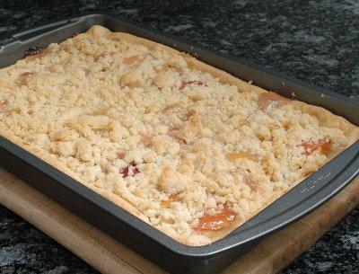

| Zutaten für 9 Personen: | |
| 8 | reife Pfirsiche |
| 1 Pack | Kuchenteig |
| 50g | Zucker |
| 1 TL | Maisstärke |
| 115g | Mehl |
| 100g | Braunzucker |
| 1/8 TL | Zimt |
| 75g | Butter oder Margarine |
Teig auswallen.
Den Boden der Backform von 20cm Kantenlänge mit dem Teig belegen.
Ofen auf 220°C vorheizen.
Pfirsiche waschen, schälen, entkernen, in Schnitze schneiden und auf dem Teig arrangieren
Mit einer Mischung aus Zucker und Maisstärke sprenkeln.
Mehl mit Braunzucker, Zimt und Butter vermengen
Diese Mischung über die Früchte geben.
Im vorgeheizten Ofen 10 Minuten backen.
Temperatur auf 190°C reduzieren und den Kuchen 35 Minuten fertig backen.
Herbert Eigenmann, Code: PCS